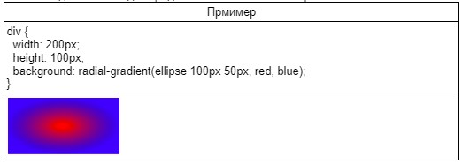

Градиент
CSS-градиент представляет собой переходы от одного цвета к другому.
Градиенты создаются с помощью функций
linear-gradient()
и radial-gradient(). Градиентный фон можно устанавливать в свойствах background, background-image, border-imageи list-style-image.Линейный градиент создается с помощью двух и более цветов, для которых задано направление, или линия градиента. Линия градиента по умолчанию 180 градусов. Если направление не указано, используется значение по умолчанию —сверху-вниз. Цвета градиента по умолчанию распределяются равномерно.
Общий вид функции linear-gradient(), в скобках значения пишутся черех запятую: background: linear-gradient (угол / ключевое слово которое определяет направление, первый цвет, второй цвет и т.д.);
Направление градиента может быть задано двумя способами, направление нужно задавать для того чтобы направить цвета в нужную сторону:
- с помощью угла наклона в градусах deg, значение которого определяет угол наклона линии внутри элемента.
- с помощью ключевых слов to top, to right, to bottom, to left, которые соответствуют углу градиента, равному 0deg, 90deg, 180deg и 270deg соответственно. Ключевые слова говорят о том в какую сторону цвета будут переливаться начиная от первого цвета к последнему.
| Пример | |
| Задание направления градиента с помощью градусов | Здание направления с помощью ключевого слова |
|
|
Для неравномерного распределения цветов указывается начальная позиция каждого цвета через точки остановки градиента, так называемые color stops. Точки остановки задаются в %, где 0% — начальная точка, 100% — конечная точка. Точки остановки нужны для того чтобы сказать сколько процентов будет занимать выбранный вами цвет.
|
Для четкого распределения цветных полос каждый последующий цвет нужно начинать с точки остановки предыдущего цвета:
|
Радиальный градиент отличается от линейного тем, что цвета выходят из одной точки (центра градиента) и равномерно распределяются наружу, рисуя форму круга или эллипса.
background: radial-gradient(форма градиента / размер / позиция центра, первый цвет, второй цвет и т.д.);
Форма градиента определяется ключевыми словами circle или ellipse. Если форма не задана, по умолчанию радиальный градиент принимает форму эллипса.

Размер градиента задается с помощью пары значений в px, em или %. Размер можно задать только для градиента со значением ellipse.
Позиция центра задаётся с помощью ключевых слов, используемых в свойстве background-position, с добавлением приставки at. Если позиция центра не задана, используется значение по умолчанию at center. Как и в background-position позицию центра можно задавать при помощи px и %

Повтор градиента
В добавление к линейному и радиальному градиентам существует повтор градиента, который задается с помощью функций repeating-linear-gradient() и repeating-radial-gradient() соответственно. Фон из повторяющихся градиентов выглядит неаккуратно, поэтому рекомендуется начинать следующий цвет с точки остановки предыдущего, создавая таким образом полосатые узоры.